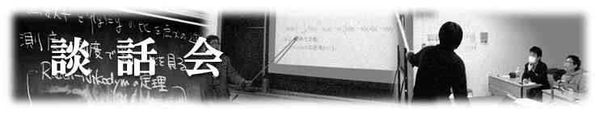

談話会のトピックス
| 談話会とは | 談話会アーカイブ |
| 数物セミナーでは、各大学の教室などを借りて不定期に談話会を行っています。 ここでは談話会とはどのようなものであるのか説明します。 | 談話会の発表資料やUSTREAMアーカイブなどを参照できる 特設ページです。 |

|
|
談話会一覧
| 談話会名 | 開催年 | 開催地 |
|---|---|---|
| 談話会2010 in Okayama | 2010 | 岡山大学 |
| 早慶談話会2010 | 2010 | 慶應大学・早稲田大学 |
| 冬の大談話会2011 | 2011 | 岡山大学・早稲田大学・北海道大学・東北大学・名古屋大学 |
| 名古屋談話会Lite 第1回～第5回 | 2012 | 名古屋大学 |
| 数物セミナー談話会 in Tokyo | 2012 | 早稲田大学・慶應義塾大学・東京理科大学 |
| 北海道談話会 | 2012 | 北海道大学 |
| 数物セミナー談話会 in Nagoya | 2012 | 名古屋大学 |
| 数物セミナー談話会 in Saitama | 2012 | 埼玉大学 |
| 冬の談話会2012 | 2012 | 岡山大学・名古屋大学・慶応大学 |
| 名古屋談話会Lite 第6回，第7回 | 2013 | 名古屋大学 |
| 春の談話会2013 | 2013 | 早稲田大学・慶応大学・名古屋大学・埼玉大学 |
| 夏の談話会2013 in 慶応 | 2013 | 慶応大学 |
| 矢上祭談話会 | 2013 | 慶応大学 |
| 冬の大談話会2013 | 2013 | 埼玉大学・慶応大学・東京理科大学・早稲田大学 |
| 冬の談話会2013 Lite | 2013 | 岡山大学 |
| 春の大談話会2014 | 2014 | 早稲田大学・慶応大学・東北大学・大阪府立大学 |
| 秋だョ！全学年集合談話会 in 慶應 | 2014 | 慶應大学 |
| 幾何学談話会2014 in 早稲田 | 2014 | 早稲田大学 |
| 冬の談話会2014 | 2014 | 慶應大学・早稲田大学・岡山大学 |
| 春の大談話会2015 | 2015 | 慶應大学・お茶の水女子大学・早稲田大学・東北大学・兵庫県立大学 |
| 冬の大談話会2015 | 2015 | 首都大学東京・東北大学・慶應大学・早稲田大学・お茶の水女子大学・岡山大学・九州大学・大阪府立大学 |
| 春の大談話会2016 | 2016 | お茶の水女子大学・東北大学・早稲田大学・東京大学・神戸大学・慶應義塾大学・京都大学・九州大学 |
| 冬の談話会2016 | 2016 | 京都大学・お茶の水女子大学・早稲田大学 |
| 春の談話会2017 | 2017 | 京都大学・近畿大学・北海道大学 |
| 秋・冬の談話会2017 | 2017 | 愛媛大学・北海道大学・慶應義塾大学 |
| 都立大談話会 | 2023 | 東京都立大学 |
| 海洋大談話会 | 2024 | 東京海洋大学 |